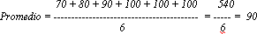

Tema 3: El promedio ponderado
La media o promedio aritmético también se puede calcular usando el método del promedio ponderado. El promedio ponderado es una forma un poco más compleja de calcular la media, pero de gran utilidad práctica. Para explicar el concepto de promedio ponderado, recurriremos a la ayuda siempre disponible y desinteresada del Dr. Math (Dr. Matemáticas), un valioso recurso del Internet que entrega respuestas a preguntas matemáticas para estudiantes de primaria y secundaria. (Para visitar al Dr. Math, vaya a: www.forum.swarthmore.edu/dr.math).
A continuación, reproducimos un intercambio de correos electrónicos entre Jacobo Smith, un estudiante de secundaria, y el Dr. Math.
Fecha: 02/11/98 a las 21:09:00 De: Jacobo Smith Asunto: Ayuda con el "promedio ponderado" Estimado Dr. Math: Estoy en 9º año y nuestro maestro de matemática está explicando el "promedio ponderado". ¿Podría ayudarme dando una explicación sencilla, pero detallada de esto? Gracias por dedicarme su tiempo. Atentamente, Jacobo Fecha: 03/11/98 a las 12:18:47 De: Doctor Peterson Asunto: Re: Ayuda con el "promedio ponderado" Hola, Jacob. Pienso que comenzaré por explicar lo que significa promedio ponderado con un caso simple y luego consideraré un caso más general. Supongamos que tu maestro dice que el examen final equivale a tres pruebas. Entonces, si tus calificaciones son: pruebas: 70, 80, 90 examen final: 100 tu promedio será exactamente como si hubieras obtenido: pruebas: 70, 80, 90, 100, 100, 100  Si deseamos calcular esto en forma directa (usando el método del promedio ponderado), simplemente podemos multiplicar la calificación del examen final por 3 cuando la sumamos, pero también debemos recordar que tenemos que contarla tres veces en el denominador y no sólo dividir por 4. Puedes hacer esto escribiéndolo de esta forma:| Calificación | Ponderación | Valor | |
|---|---|---|---|
| 70 | 1 | 70 | |
| 80 | 1 | 80 | |
| 90 | 1 | 90 | |
| 100 | 3 | 300 | |
| 6 | 540 | --> promedio = 540/6 = 90 |
A continuación exploraremos un ejemplo. Observe el cuadro 9 y trate de responder a la siguiente pregunta utilizando el método del promedio ponderado antes de continuar leyendo. ¿Cuál es el ingreso medio, o ingreso per cápita, de los ciudadanos de los países de Europa Oriental indicados en el Cuadro 9?